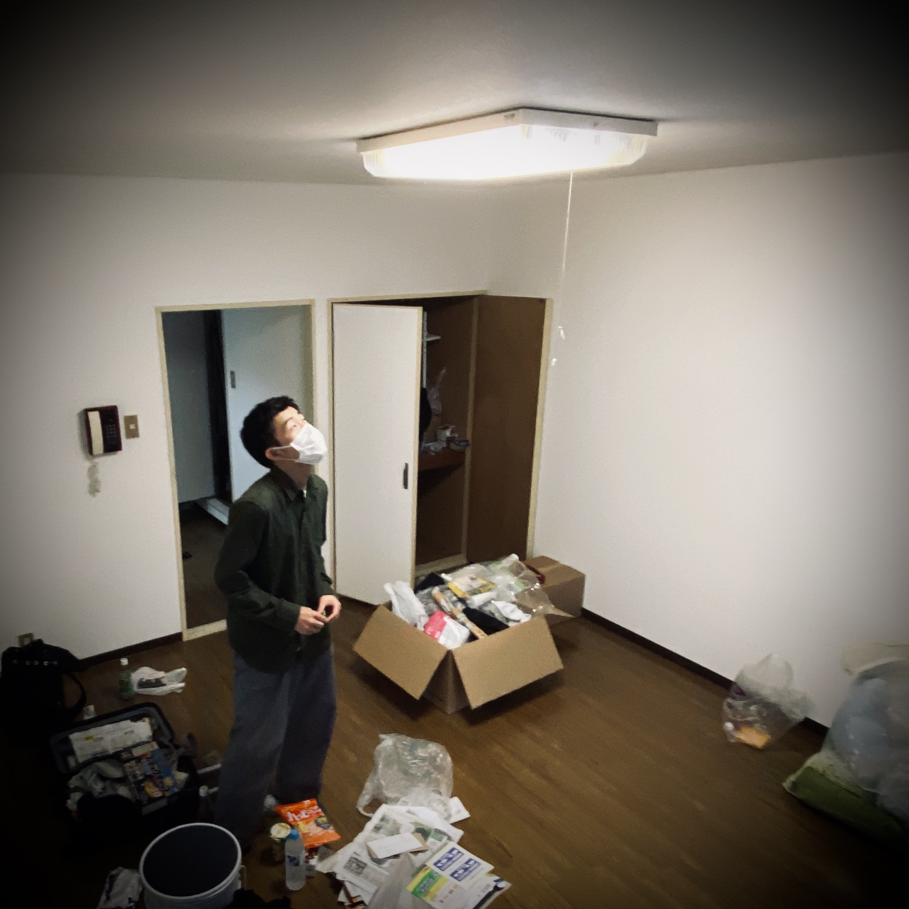
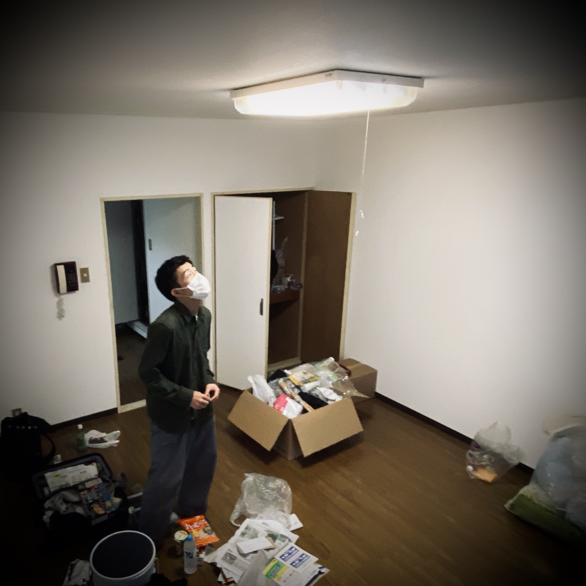

自己紹介
↑最近面白かったやつ
中山ハルキといいます
頑張って生きてます、漫才やコントを見るのが好きです。
それはそうと学校は楽しいです。クロステックは皆愉快です。
どうしてそんなこと考えたんだろう、と気になっちゃうことが多くあります。
対面授業が楽しみです。．

中山ハルキといいます
頑張って生きてます、漫才やコントを見るのが好きです。
それはそうと学校は楽しいです。クロステックは皆愉快です。
どうしてそんなこと考えたんだろう、と気になっちゃうことが多くあります。
対面授業が楽しみです。．
